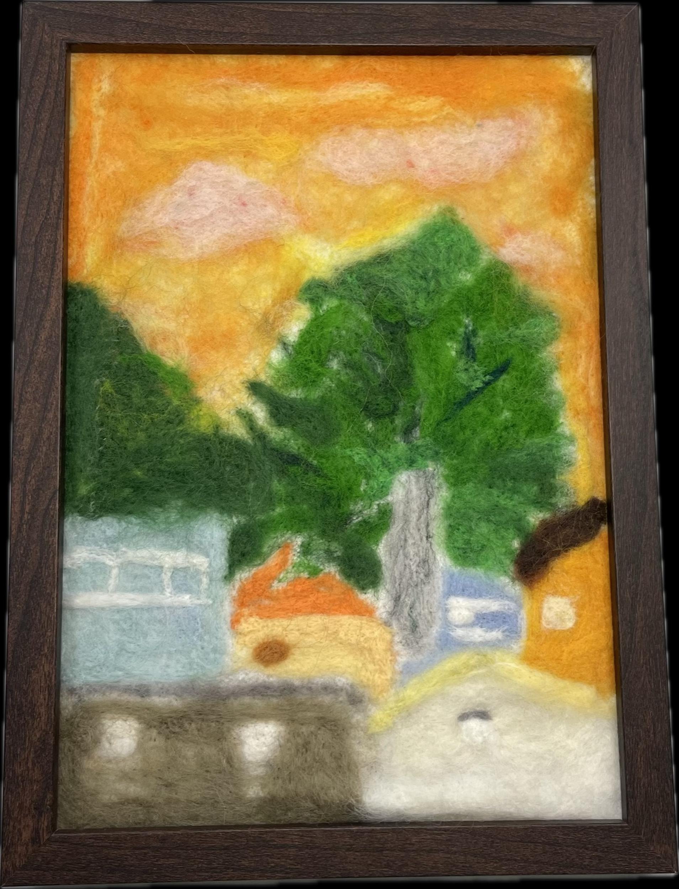

作品名稱：Memory
作者姓名：葉子淇
作品主題：不同角度的風景-宿舍頂樓的黃昏
作品敘述：這幅畫的場景來自學校宿舍的頂樓，我覺得高中記憶最深刻的其中一件事就是站在宿舍頂樓看著天空，有時候能看見好多顆星星在夜空中閃閃發亮，有時候是橘粉色的夕陽光輝伴隨飛機飛過，我希望自己能把對於高中最美好深刻的場景利用畫保存下來，成為心中永遠不會消失的回憶。
This painting depicts a scene from the rooftop of the school dormitory. One of the most vivid memories from my high school days is standing on that rooftop, gazing at the sky. Sometimes, I could see countless stars twinkling in the night sky, while other times, it was the radiant orange and pink hues of the sunset accompanying planes passing by. I hope to preserve the beauty and significance of this scene from my high school days through this painting, turning it into a memory that will remain in my heart forever.